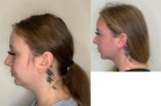
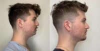
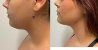

Name: Navjot Singh, MD, FACG
Last name: Singh
Gender: male
Began aesthetic medicine in: 2004
Years experience: 19
Primary Specialty: Gastroenterologist
Business: Just Go Liposuction by Singh Aesthetics
Address: 8415 N. Pima Rd.
Address suite: #125
City: Scottsdale
State: Arizona
Zip Code: 85258
Country: US
Statement: I’m Dr. Navjot Singh, a board-certified physician specializing in aesthetic treatments. With a dedication to excellence and a passion for enhancing natural beauty, I’m here to help you look and feel your absolute best.
My journey in medicine began with a deep-rooted desire to make a difference in people’s lives. After extensive training and a commitment to continuous education, I achieved my board certification. This journey has equipped me with the knowledge and skills necessary to provide you with exceptional care.
Cosmetic procedures are a blend of art and science, and my approach is centered on achieving harmony and balance. From face to body treatments, I offer a wide range of procedures designed to enhance your unique beauty. My precision and attention to detail ensure that your results are both stunning and natural-looking.
Conveniently located in Scottsdale, Arizona, our practice is a sanctuary for your transformation journey. Our state-of-the-art facility, including a private operating room, prioritizes your safety, comfort, and confidentiality. Our dedicated staff shares a commitment to delivering an exceptional experience.
What truly sets me apart is my commitment to personalized care. I understand that each patient is unique, and I take the time to tailor every procedure to your individual goals and needs. Whether it’s a subtle enhancement or a complete transformation, I’m here to make your dreams a reality.
Choosing a cosmetic provider is a significant decision, and it’s essential to select someone you can trust. When you choose me as your partner in transformation, you’re not only choosing a skilled physician but also an empathetic listener and advocate for your beauty journey.
Your beauty is my canvas, and your happiness is my masterpiece. Let’s embark on this empowering journey together, where your confidence and well-being take center stage. Your transformation starts here with Dr. Navjot Singh, your trusted partner in beauty and self-assurance.
Consulting Fees: 0$
Consultation note: Virtual consultations available.
Has Sponsored Offer : No
Clinical Privileges:
- Gulf Coast Medical Center- Fort Myers FloridaQueen of the Valley Medical Center- Napa CaliforniaFlaggstaff Medical Center- Flaggstaff ArizonaEnloe Regional Medical Center- Chico California
Education:
- Undergraduate: Michigan State University
- Medical: MD, Indiana University School of Medicine
Postdoc Training:
- Certificate: American Society of Liposuction Surgery
- Certificate: American Academy of Cosmetic Surgery – Member
GPS coordinates on map: 33.5573512,-111.8908603
Primary location:
Location name: Scottsdale
State: AZ
Country: US
Map point: 33.582,-111.9000015
Treatments:
- Accent Prime
- Bellafill
- Dermal Fillers
- Dysport
- Nonsurgical Butt Lift
- Ozempic for Weight Loss
- Renuvion
- Restylane
- Restylane Contour
- Restylane Defyne
- Restylane Kysse
- Restylane Lyft
- Restylane Refyne
- Restylane Silk
- Sculptra
- Sculptra Butt Lift
- Skin Tightening
- Vaser Liposuction
RealSelf Info
Awards:
- Adjunct Associate Professor of Medicine – Michigan State University
- Adjunct Associate Professor of Medicine – University of Nevada School of Medicine
Rating: 5.0
Profile views: 1382
Answer count: 95
Review count: 7
5 star count: 6
Total star count: 6
Star rating: 3.4342128140809
Photo count last three months: 16
Answer count last three months: 14
Photo and answer count last three months: 30
Profile created: Nov 14, 2021
Profile modified: Dec 2, 2023
Profile photo modified: Oct 30, 2023
Profile promotion: Yes
Profile inactive: No
Premier status: Free
Tier: Free-Unclaimed
RealCare Promise: No
Directory link: Gastroenterologist, Board Certified in Internal Medicine
RealSelf’s PRO: No
Is Top Doctor: 1
Doctor Designation Start Time: Nov 22, 2023
Doctor Designation End Time: Feb 22, 2024
Locations
- Scottsdale, AZ, US. GPS coordinates: 33.582,-111.9000015
Latest ratings of treatments
- Vaser Liposuction (Dec 2021) – Overall rating: 5/5
- Liposuction (Jul 2022) – Overall rating: 5/5
- Liposuction (Aug 2021) – Overall rating: 5/5
- Vaser Liposuction (Dec 2021) – Overall rating: 5/5
- Liposuction (Jul 2022) – Overall rating: 5/5
- Liposuction (Mar 2022) – Overall rating: 5/5
- Tumescent Liposuction (Mar 2022) – Overall rating: 5/5
- Tumescent Liposuction (Mar 2022) – Overall rating: 5/5
- Tumescent Liposuction (Mar 2022) – Overall rating: 5/5
- Liposuction (Mar 2022) – Overall rating: 5/5
- Liposuction (Mar 2022) – Overall rating: 5/5
- Vaser Liposuction (Jan 2022) – Overall rating: 5/5
- Vaser Liposuction (Jan 2022) – Overall rating: 5/5
- Vaser Liposuction (Jan 2022) – Overall rating: 5/5
- Liposuction (Oct 2021) – Overall rating: 5/5
- Liposuction (Aug 2021) – Overall rating: 5/5
- Liposuction (Aug 2021) – Overall rating: 5/5
- Liposuction (Aug 2021) – Overall rating: 5/5
- Liposuction (Aug 2021) – Overall rating: 5/5
- Liposuction (Aug 2021) – Overall rating: 5/5
- Liposuction (Aug 2021) – Overall rating: 5/5
- Liposuction (Oct 2021) – Overall rating: 5/5
- Liposuction (Oct 2021) – Overall rating: 5/5
- Liposuction (Nov 2021) – Overall rating: 5/5
- Liposuction (Nov 2021) – Overall rating: 5/5
- Liposuction (Nov 2021) – Overall rating: 5/5
- Liposuction (Nov 2021) – Overall rating: 5/5
- Vaser Liposuction (Dec 2021) – Overall rating: 5/5
Latest Prices
Vaser Liposuction Prices
- $3800 – Jan 18, 2022
- $3800 – Jan 18, 2022
- $3800 – Jan 18, 2022
Liposuction Prices
- $7500 – Jul 1, 2022
- $7500 – Jul 1, 2022
- $10500 – Nov 30, 2021
- $10500 – Nov 30, 2021
- $10500 – Nov 30, 2021
- $10500 – Nov 30, 2021
Doctor’s answers
Question
Answer Header & Date
Answer Snippet
Will J-Plasma/Renuvion make a big enough difference for my loose skin?
Renuvion to tighten loose skin
Dec 21, 2023
It’s great to hear you’re happy with your lipo 360 results. To address the loose skin, Renuvion could be a suitable option for skin tightening without undergoing a tummy tuck. However, since you’ve previously had liposuction, there may be scar tissue in the area, which can complicate further procedures. In such cases, it might be necessary to redo Vaser Liposuction along with Renuvion. The Vaser technique can help to break down and remove scar tissue, and then Renuvion can be used to tighten…
Would Vaser Liposuction Work For Me?
Candidate for Vaser Liposuction
Dec 21, 2023
Thank you for your question. Yes, Vaser Liposuction could be an option for you to achieve a more defined waist and address the stubborn lower stomach fat. Given that you’re already slim and work out regularly, there might not be a significant amount of fat to remove, but Vaser Liposuction is well-suited for precision body contouring in such cases. It can effectively target and remove small, localized fat deposits, enhancing your natural body shape. However, it’s important to have realistic…
Which procedure would help correct loose skin on the thighs after weight loss?
Minimally Invasive Lipo and Renuvion skin tightening
Dec 21, 2023
Congratulations on your weight loss achievement. To address loose skin on your thighs, a combination of Vaser Liposuction and Renuvion could be a viable option. Vaser Liposuction can help to reduce any remaining fat deposits, and Renuvion uses advanced technology to tighten the skin. Renuvion is particularly effective for skin tightening after substantial weight loss, as it promotes collagen production, leading to firmer skin over time. However, it’s important to have a consultation with a…
Will I gain weight back if I stop Ozempic?
Ozempic(semaglutide)
Nov 23, 2023
“Thank you for sharing your question. Yes, there is a possibility of gaining weight back after stopping Ozempic if you don’t maintain weight management through other means. Ozempic (semaglutide) works by regulating your appetite and blood sugar levels, which helps with weight loss. Once you stop taking it, these effects cease, and if you haven’t established sustainable lifestyle changes such as a balanced diet and regular exercise, weight regain can occur. It’s important to use the time whi…
I would like to reduce the size of my upper arm but have loose skin. What would be recommended t
Liposuction, Renuvion
Nov 23, 2023
“Thank you for sharing your question and pictures. For reducing upper arm size and addressing loose skin without long scars from an arm lift, a combination of liposuction and a non-surgical skin tightening procedure could be a good option. Liposuction can reduce the fat in the arms, while treatments like Renuvion can help tighten the skin. These methods usually result in minimal scarring compared to a traditional arm lift.
“
Can I have general anaesthetic instead of IV sedation for Vaser liposuction?
Vaser Liposuction
Nov 8, 2023
“Thank you for your question. Yes, general anesthesia can be used for Vaser liposuction, but its availability can vary by practice. If you have significant anxiety about the procedure and prefer general anesthesia, it’s important to communicate this with your surgeon. If the current practice does not offer general anesthesia, you may need to consider finding a practice that aligns more closely with your comfort and anesthesia preferences. It’s essential for you to feel comfortable and secure…
Exilis before Vaser liposuction?
Vaser Liposuction
Nov 8, 2023
“Thank you for your question. Yes, it’s generally possible to have Vaser liposuction after undergoing a non-invasive treatment like Exilis. However, it’s essential to inform your surgeon about the previous treatment and any reactions you had, such as the painful lump. The surgeon can then assess the condition of your tissue and decide on the best approach for your Vaser procedure. It’s important for the surgeon to be aware of any complications or residual effects from the Exilis to ensure…
Latest Before And After Photos
-

-
Doctor Singh, Scottsdale, Arizona (85258) 22 Year Old Spouse Treated With Vaser Lipo Surgery
-

-
Dr. Singh, Scottsdale, Arizona 32 Year Old Man Treated With Vaser Lipo Surgery Image
-

-
Dr. Singh, Scottsdale, Arizona 24 Year Old Mrs. Treated With Vaser Best Liposuction
Last updated on 12/26/2023